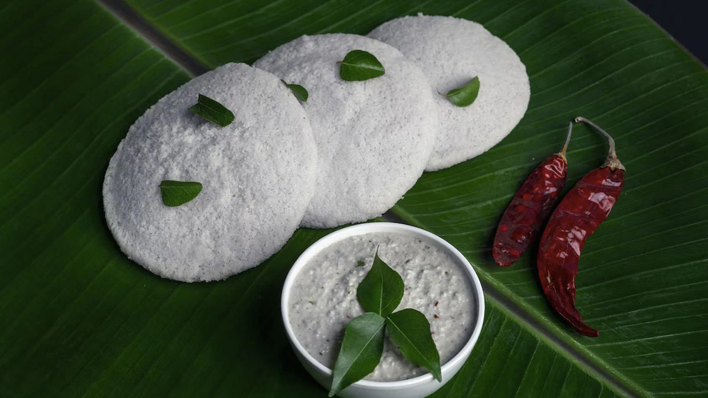

Home
Kanchipuram Idli

Description
Kanchipuram idli, also known as Kovil idli, is a savory, spiced idli (steamed rice cake) originating from the
temple town of Kanchipuram in Tamil Nadu.
It's a popular breakfast dish and is also offered as prasadam (sacred
food) in the Varadaraja Perumal Temple. These idlis are distinguished by the addition of spices like cumin,
pepper, ginger, and asafoetida to the fermented batter.
Ingredients
- 1 bowl Idli batter
- Salt, as per taste
- 2 tsp ghee
- 1 spring curry leaves, chopped
- 1/2 tsp hing
- 1/2 tsp dry ginger powder
- 1 tsp cumin seeds
- 1 black peppercorn
- 2-3 Green Chillies, chopped
- 1 tsp soaked chana dal
Steps
- Heat ghee in a kadhai and prepare a tadka with all the spices and herbs.
- Once done, add to the idli batter.
- Add some salt and give a final mix.
- Allow the batter to ferment overnight.
- Allow the batter to ferment overnight.
- Prepare idli in idli steamer and serve.